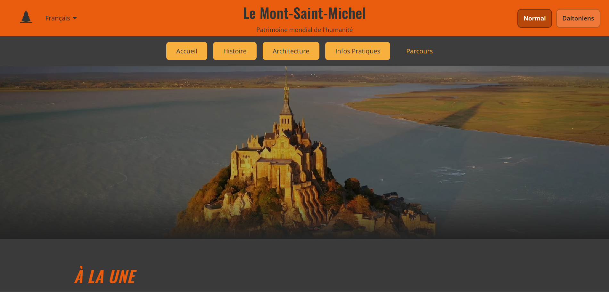
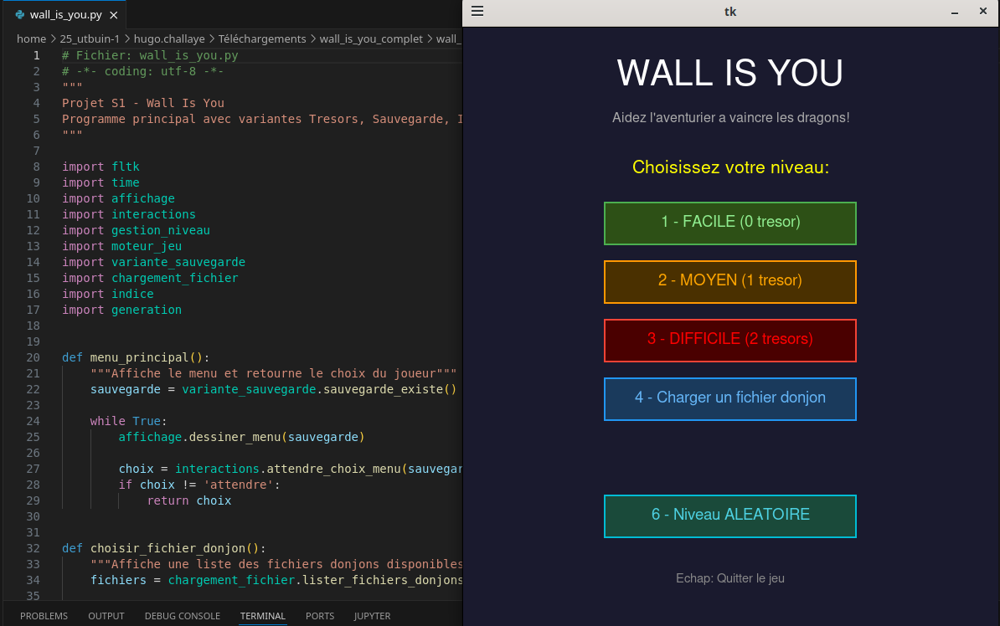
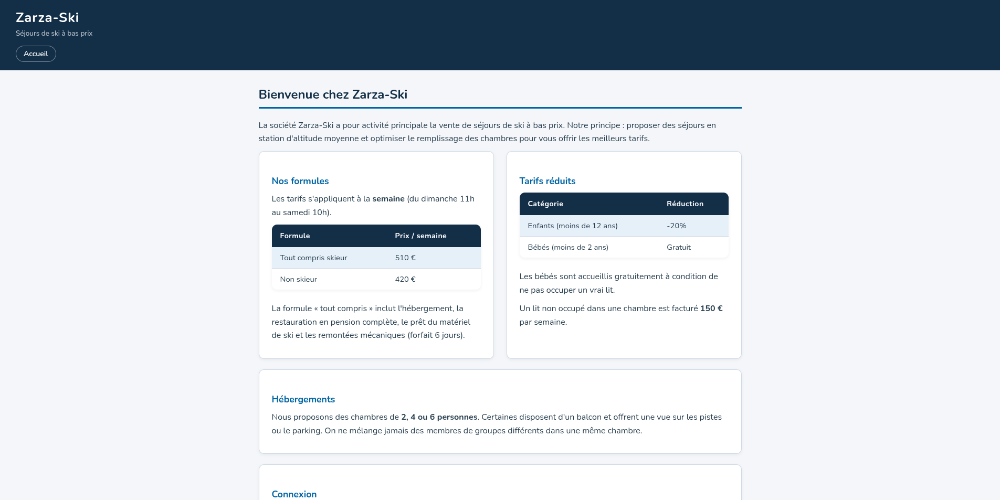

Portfolio
IUT Gustave Eiffel · Champs-sur-Marne
02 — À propos
Qui
suis-je ?
Je m'appelle Hugo Challaye, j'ai 20 ans. Je suis étudiant en BUT Informatique à l'IUT Gustave Eiffel de Champs-sur-Marne.
Je travaille sur des projets en Python, Java et développement web. J'aime comprendre comment les choses fonctionnent, que ce soit un algorithme, un réseau ou une interface.
Je m'exprime en français, en anglais (B1) et un peu en espagnol (A2). Je suis joignable à challayehugo.pro@gmail.com ou sur LinkedIn.
03 — Compétences
04 — Projets

Le Mont Saint-Michel
Site de médiation culturelle UNESCO. Projet en équipe de 6.

Wall Is You
Jeu de donjon avec pathfinding. Interface graphique fltk.
Conseil des Schtroumpfs
Jeu de gestion stratégique en Java. Architecture MVC.
Exploration Algorithmique
Algorithmes sur automates et langages formels.
Yahtzee
Recréation du jeu de dés classique en Java.

Base de données
Gestion d'un cimetière. MySQL puis PostgreSQL.
Serveur DHCP
Configuration réseau Linux avec Netkit-ng et Wireshark.
Amor Vincit
Site de rencontre pour seniors en maison de retraite.
Imperium Pizza
Application de commande de pizzas avec JavaFX.
05 — Curriculum Vitae
Hugo Challaye
BUT Informatique — IUT Gustave Eiffel (2024-2027)
Recherche une alternance de 2 ans en développement informatique.